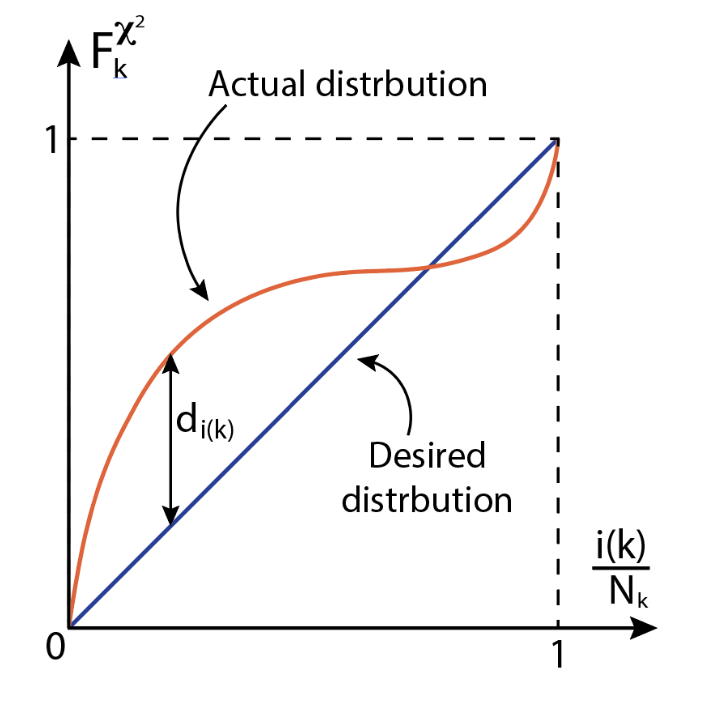
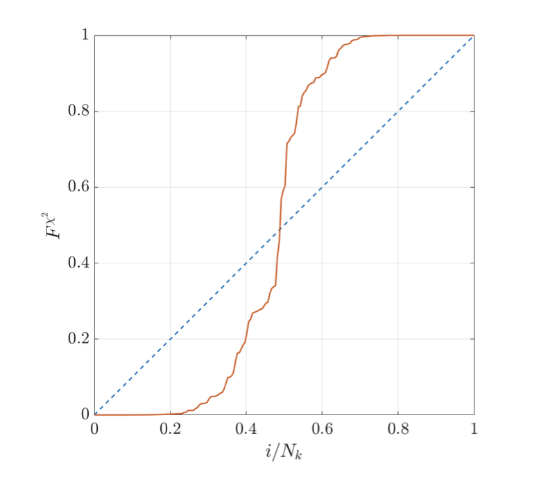
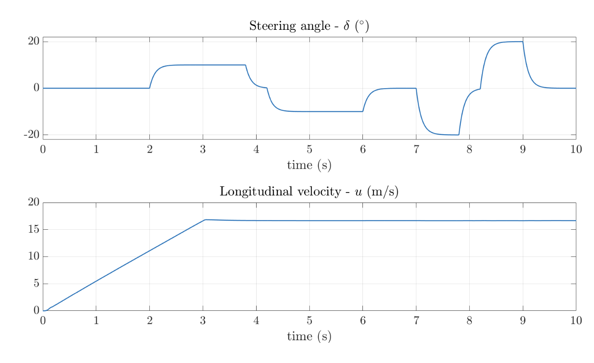
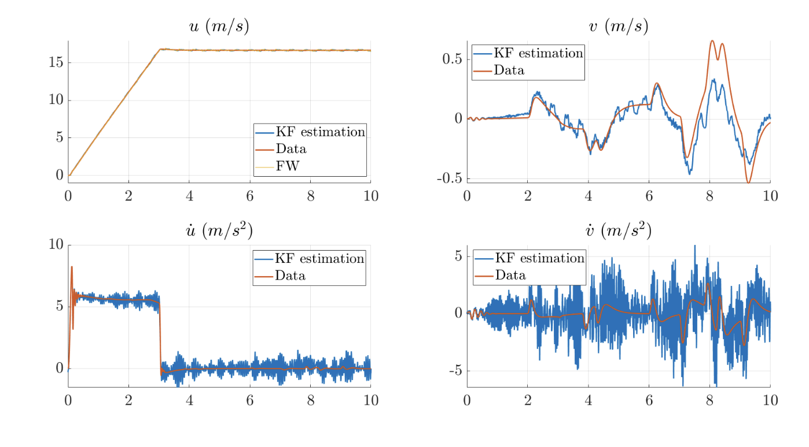
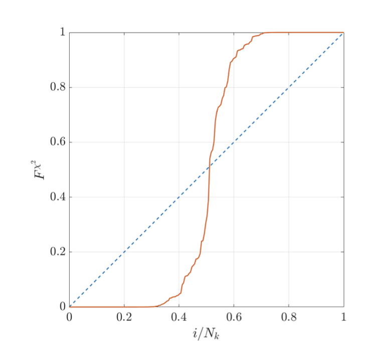
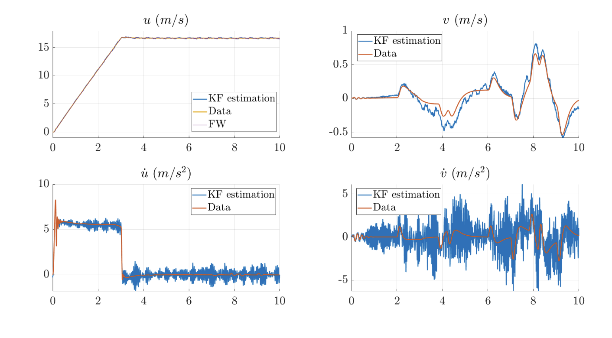
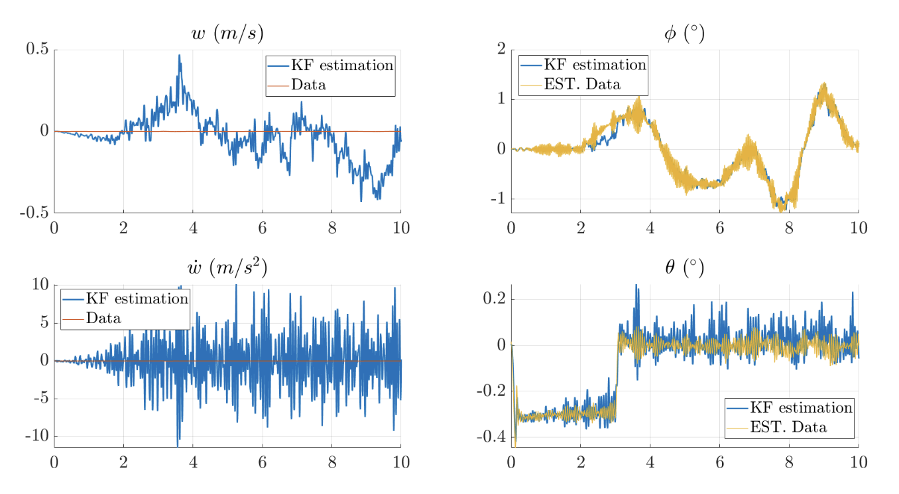
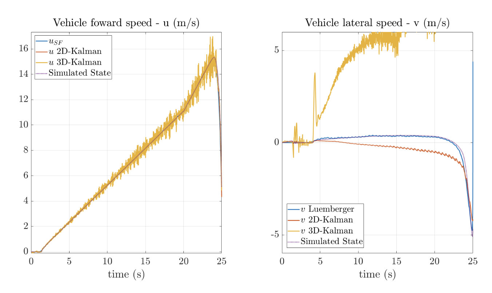
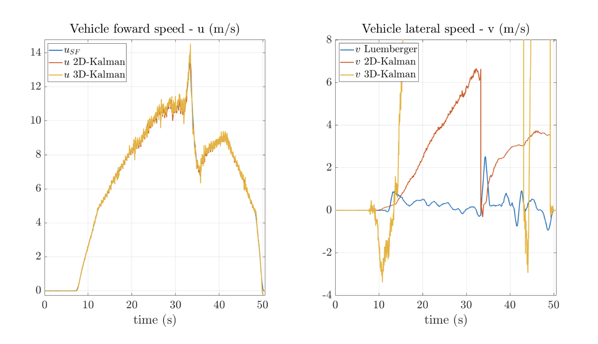

Lateral Velocity Estimator
Lateral Velocity Luemberger Observer
One of the most common problem in the vehicle state estimation is the estimation of the lateral velocity \((v)\), or the body-side slip angle \((\beta)\). A simple method to solve this problem is the kinematic-based Luemberger observer, presented also in [7].
This observer is based on the following system of equations.
In order to implement the observer, the system has to be written in state-space form.
Equation 16 correspond to the system evolution equation while equation 17 is the output equation, namely, the computation of the measurable quantities. Since the lateral velocity is not in the output vector, it can not be measured.
The observer uses the state evolution equation in order to estimate the states and corrects the estimation using the estimation error on the measurable output \((z-\hat{z})\).
Where \(\hat{ {x}}\) and \(\hat{ {z}}\) are the estimated state and output vector respectively and \(L\) is the so-called Luemberger's matrix.
From equation 18, the estimation error \(( {e}= {x}-\hat{ {x}})\) dynamical equation can be extrapolated.
Looking at equation 19, the error is asymptotically stable if and only if the matrix \((F-L H)\) is Hurwitz, i.e. its eigenvalues has a negative real part. In order to impose this condition, the Luemberger's matrix has to be properly tuned.
A possible choice for the matrix \(L\) is reported in relation 20. This matrix ensures that the eigenvalues of the matrix \(G\) are \(e_{v-1,2}=-\gamma|\Omega|\), providing error stability. The parameter \(\gamma\) is a tunable parameter and is connected to the convergence rate.
An observability check is useful to evaluate the performance of this algorithm. It consists in the computation of the rank of the Observability matrix \((O)\). If \(\operatorname{Rank}(O)=\) \(n\), where \(n\) is the state dimension - in this case 2 -, the system is observable.
From equation 21, it is possible to see that the matrix \(O\) has rank equal to 2 if the yawrate is different from 0 . This means that the system is not observable if the trajectory is straight. This may be deduced also from the eigenvalues of the matrix \(G\), that goes to zero making the system simply stable when \(\Omega\) tends to zero. However, this problem can be easily solved by resetting the observer when the yaw-rate is close to zero - as explained in the results of [7] -.
This observer does not require any prior knowledge about the vehicle and is computationally simple. These characteristics allow the spreading of this algorithm.
Luemberger Observer Tuning
As we already said, the performance of the Luemberger observer is given by the tunable parameter \(\gamma\). Theoretically, it should be higher as possible in order to guarantee convergence. However, increasing it too much can generate chattering in the estimation. On the contrary, if the value of \(\gamma\) is low, the estimation tends to diverge under the effects of dynamical bias that are difficult to be compensated.
In an offline analysis, a simple solution to this problem is to increase the observer gain to ensure a correct estimation and strongly filter the observer output. For this application, a moving average filter is applied further and backwards in time to compensate for the filtering delay.
Using this trick, the parameter \(\gamma\) can be set equal to 100 .
Real-time estimation of the lateral velocity needs a more sophisticated observer tuning, a different filtering technique - for example, similarly to the one applied to the SOSM observer presented in the following section - or a more robust estimation scheme, involving vehicle dynamical properties.
KF Lateral Velocity Estimators - Planar Estimator
Alternatively to the Luemberger observer, there are other methods for the lateral velocity estimation. In this thesis, two different Kalman filters are shown, with two different levels of complexity.
The first presented Kalman filter is based on the same system model described in equations of Luemberger observer and reported also below. However, the definition of the system and measurement errors ( \(v\) and \(w\) respectively) is needed. The integration scheme is included in the system matrices. The vector z contains the measured quatities from the sensor, instead the vector x the states. N.B. \(\dot{u}\) and \(\dot{v}\) are different form \(a_{x}\) and \(a_{y}\) (measured from the IMU), because the time partial derivate of the velocity in states (\(\dot{u}\) and \(\dot{v}\)) measure only the absolute value variation of u and v!
where
so the matrices become:
Differently from the Luemberger case, this algorithm uses also the information on the measured acceleration in order to correct the estimation. The estimated accelerations are computed in the updating step inverting the process equations. Hence, the same values of accelerations are used as inputs, in the prediction steps, and as measured quantities in the updating step.
The algorithm iteration scheme is shown in equations 3, 4 and 5. To increase the estimation accuracy, the estimator output is reset when the yaw-rate is close to zero.
KF Lateral Velocity Estimators - 3D Estimator
The second state estimator Kalman filter that is presented in this thesis is based on the work of Alatorre et al. [4]. This estimator is based on a larger system of equations that include also the third dimension. This allows us to take advantage of the gravity term in order to correct some acceleration bias and to estimate the roll and the pitch angle. The system of equations is reported in relation 23. The vector z contains the measured quatities from the sensor, instead the vector x the states. N.B. \(\dot{u}\), \(\dot{v}\) and \(\dot{w}\) are different form \(a_{x}\), \(a_{y}\) and \(a_{z}\) (measured from the IMU), because the time partial derivative of the velocity in the states (\(\dot{u}\), \(\dot{v}\) and \(\dot{w}\)) measure only the absolute value variation of u and v! The equation is used directly for the matrix H, instead need to be inverted to find matrix F, which needs \(\dot{u}\), \(\dot{v}\) and \(\dot{w}\).
where \(w\) is the vertical component of the centre of mass velocity and \(g\) is the gravity acceleration value - equal to \(-9,81 \mathrm{~m} / \mathrm{s}^{2}\) -
In relation 23, roll and pitch appear in the trigonometric functions. To remove these non-linearity terms, the sine and the cosine of these angles are considered as system states defining its evolution as follow, where \(\alpha\) is a generic angle.
To sum up, the system states are collected in the vector \(x\). The measurements are collected in the vector \(z\) and includes the longitudinal velocity computed from the frot wheels - or another estimation method -, the centre of mass accelerations and the value of sine and cosine of roll and pitch, estimated using the steady-state formulation in the load transfer model - reported in the following section in the expressions 39 and 40 The system input vector collects the centre of mass accelerations.
The system equations in state-space can be written as reported in the expression 22 where, in this case, the terms are defined as follow.
In this case, the system matrices are defined as follow.
where
The matrices are not constant but depend on the states, as in the previous case. In order to fill these matrices, the data from the current measurement vector are used. The last two rows of the matrix \(H\) correspond to the constraints about the sum of the square of sine and cosine of pitch and roll respectively. These constraints must be always equal to 1 , as can be seen in the last two terms of the vector \(z\).
Also, in this case, the estimator output is reset when the yaw rate is close to zero.
In [4], is reported also a different notation for this system using the quaternions formulation. However, since the vehicle model is defined using the Euler angle - roll \((\phi)\), pitch \((\theta)\) and yaw \((\psi)\)-, this formulation allows being closer to the vehicle model description. The usage of quaternions can reflect on a more robust numerical stability with respect to Euler angle. However, the Euler angles appear in their trigonometric functions which correspond with the quaternions definition.
Kalman Filters tuning
In literature, there are several methods for Kalman filter tuning. The estimators aforementioned are based on time-variant systems. For this reason, a method that uses Monte-Carlo simulation is suggested.
In this work, the Genetic Algorithm [14] is used in order to optimize the covariance matrices. The tuning algorithm aims to optimize the matrix \(Q \in \mathbb{R}^{n, n}\) and the matrix \(R \in \mathbb{R}^{m, m}\), where \(n\) is the dimension of the state vector and \(m\) is the dimension of the measurements vector. The theory behind this algorithm consists of check the statistical consistency between the estimation error and their covariance. This means that that the estimation error has to be normally distributed, with covariance matrix equal to \(P- {e}_{k} \backsim N(0, P) ; {e}_{k}=x_{k}-\hat{x}_{k \mid k}\), where \(x_{k}\) is the actual state and \(x_{k \mid k}\) is the KF estimation -
To check the consistency, a simulated data sample is built in a simulation environment. This sample contains \(N\) sample discretized with \(N_{k}\) time interval. For each time-step
\((k)\), the normalized error statistic \(\xi_{k}\) can be computed as shown in relation 24 .
The algorithm is evaluated, at each iteration, over \(N_{M C}\) Monte-Carlo runs. Averaging the error statistic over the \(N_{M C}\) runs, the mean normalized error statistic is defined as
If the estimation error \(e_{k}\) has a Gaussian distribution, \(\bar{\xi}_{k}\) is distributed as a \(\chi^{2}\) random variable with \(n N_{M C}\) degrees of freedom
Thus the filter consistency can be verified via statistical hypothesis that \(\bar{\xi}_{k}\) is distributed as a \(\chi_{n N_{M C}}^{2}\). To do that, \(F_{k}^{\chi^{2}}\) has to be defined for each time-step.
Then, the couples \(\left[\bar{\xi}_{k}, F_{k}^{\chi^{2}}\right]\) have to be sorted in ascending order. The index \(i(k) \in\) \(\left[1, N_{k}\right]\) denotes the position of \(F_{k}^{\chi^{2}}\) in the sorted array. Finally, \(F_{k}^{\chi^{2}}\) can be plotted against \(i(k) / N_{k}\) (figure 3).

Figure 3: \(\chi^{2}\) consistency test
\(1 "[\ldots]\) In statistic, it is the number of values or of variables which can be chosen arbitrarily in a stocastic model identification. [...]" see "libertà, gradi di" treccani.com Regarding figure 3, the actual distribution is consistent if it is close to the desired distribution \(\left(\chi^{2}\right)\). In order to measure the consistency of the filter, a performance index \((J)\) is mathematically defined as the area between the two curves, actual and desired.
If a filter is consistent, the optimization structure aims to minimize the estimation covariance. For this reason, the algorithm cost function is defined as the norm of the estimation covariance matrix \((\|P\|)\). To distinguish when a filter is consistent, a simple threshold over the performance index is set - typically equal to \(0.05\)-.
Algorithmically, the cost function is called fitness and is defined in relation 28 .
If the fitness is negative, it means that the system is inconsistent since the \(J\) is an always positive value. Among the inconsistent filters, the best fitness is a value close to zero. When a filter becomes consistent, the best choice is a value of fitness the smallest as possible. Between a consistent and an inconsistent filter, the best choice is always the consistent one.
The algorithm starts initializing a population: each individual is identified using a chromosome in which the optimized parameters are encoded in a string of bits. Once the initial population is evaluated, the algorithm iterations start. Each iteration is composed of three parts: reproduction, mutation and reevaluation. In the reproduction step, a certain number of individuals, randomly extracted from the population, are selected to be mother or father of two new individuals. The chromosome of the parents is cut and crossed to generate the chromosome of the children. This operation is called crossover. In order to speed up the convergence of the algorithm, the individuals with a better level of "fitness" will reproduce more. In the following step, some individuals of the original population are randomly selected to become mutants: a small number of bits is randomly selected and are inverted. Finally, to compensate for particular "lucky" Monte-Carlo simulations some individuals are chosen to be reevaluated.
These new individuals are evaluated and added to the starting population. The individuals with the worst "fitness" are the ones that should die.
For what concerns the Kalman filter implemented in this thesis, the process is timevariant. For this reason, the tuning procedure is more challenging. Nevertheless, if the sample of simulated data is enough comprehensive, the results can be still good. For both the tuning, the algorithm parameters are set as follow:
-
The parameters are encoded in the chromosome using 10 bits;
-
The population has a fixed size of 50 individuals;
-
At each iteration, 26 children are generated;
-
At each iteration, 20 mutants are created with 10 mutations each;
-
At each iteration, 5 individuals are selected to be reevaluated;
-
The number of Monte-Carlo runs are set equal to 250 over a sample of 324 tests;
-
The number of iterations is set equal to 1000
In order to have a proper tuning and results evaluation, the simulated quantities, considered as virtual sensors, are perturbed with a random noise that is closest as possible to the noise of the real sensor. In particular, for the IMU data, the MATLAB model of the inertial measurement unit (imuSensor()) is employed, considering also random walk effects.
Tuning results - Planar Estimator
The tuning procedure for the first exposed Kalman filter starts with the definition of the parameters that the algorithm has to tune. Assuming an uncorrelated processnoise and measurement noise, the covariance matrices are diagonal and their elements are the variance of the related state or measure.
These variances are free to vary over a certain interval during the optimization. Table 3 reports these intervals and the optimized value for each parameter.
| Value | Min. Val. | Max. Val. | Opt. Val. |
|---|---|---|---|
| \(\sigma_{u}^{2}\) | \(0.0\) | \(15.0\) | \(9.432\) |
| \(\sigma_{u_{d} d o t}^{2}\) | \(0.0\) | \(10.0\) | \(2.601\) |
| \(\sigma_{v}^{2}\) | \(0.0\) | \(10.0\) | \(6.247\) |
| \(\sigma_{v-d o t}^{2}\) | \(0.0\) | \(15.0\) | \(9.521\) |
| \(\sigma_{u_{m}}^{2}\) | \(0.0\) | \(5.0\) | \(3.468\) |
| \(\sigma_{a}^{2}\) | \(0.5\) | \(2.0\) | \(0.605\) |
Table 3: Tuning results - planar state estimator
Adopting these parameters in the covariance matrices, the consistency test gives a performance index \(J=0.143\). This means that the filter is not consistent, using the aforementioned definition. This definition, coupled with the fact that the consistency graph (figure 4) shows two curves different from each other, suggests not use this estimation algorithm. However, looking at the algorithm output for a simulation manoeuvre - the simulation inputs of this manoeuvre are shown in figure 5-, the results seem to be proper (figure 6).

Figure 4: \(\chi^{2}\) consistency test - planar state estimator

Figure 5: Inputs of the manoeuvre used for the tuning evaluation

Figure 6: Estimation results - planar state estimator
Tuning results - 3D Estimator
For what concern the second Kalman filter, the process and the measurement covariance matrices are larger than in the case before - \(Q \in \mathbb{R}^{14,14}\) and \(R \in \mathbb{R}^{10,10}\)-. However, it is possible to assume that the process state and the measure are uncorrelated with each other. Using this hypothesis, the matrices \(Q\) and \(R\) can be initialized as diagonal matrices, with their elements equal to the variance of the associated state or measure.
In table \(4 \sigma_{\text {sin/cos }}^{2}\) and \(\sigma_{\text {sin/cos-dot }}^{2}\) are the variance related to the trigonometric functions of pitch and roll and their derivatives. \(\sigma_{1}^{2}\) is, instead, connected to the constraint about the trigonometric functions: ideally, it is equal to zero. However the non-absolutely correctness of the expressions, due to estimation errors, makes the constraint vary causing a non-zero variance.
With this set of parameters (table 4), the resulting performance index results \(J=\) 0.175. As in the case before, the filter results non-consistent. However, looking at the figures 8 and 9, obtained with the same manoeuvre of the case before (figure 5), the estimation results give a sufficiently good estimation for the states of interest. The only state that seems to be wrong estimated is the vertical velocity \(w\). Nevertheless, the reference value of it is equal to zero and the estimated value does not differ too much from the reference.
| Value | Min. | Max. | Opt. | Value | Min. | Max. | Opt. |
|---|---|---|---|---|---|---|---|
| \(\sigma_{u}^{2}\) | \(5.0\) | \(15.0\) | \(6.769\) | \(\sigma_{w-dot}^{2}\) | \(0.0\) | \(10.0\) | \(7.811\) |
| \(\sigma_{u ext { dot }}^{2}\) | \(15.0\) | \(25.0\) | \(15.684\) | \(\sigma_{\text {sin }}^{2}\) | \(0.0\) | \(1.0\) | \(0.116\) |
| \(\sigma_{v}^{2}\) | \(0.0\) | \(10.0\) | \(2.601\) | \(\sigma_{\text {sin-dot }}^{2}\) | \(0.0\) | \(5.0\) | \(4.057\) |
| \(\sigma_{v_{-d o t}}^{2}\) | \(0.0\) | \(10.0\) | \(0.627\) | \(\sigma_{\text {cos }}^{2}\) | \(0.0\) | \(0.5\) | \(0.546\) |
| \(\sigma_{w}^{2}\) | \(8.0\) | \(18.0\) | \(15.410\) | \(\sigma_{\text {cos-dot }}^{2}\) | \(0.0\) | \(5.0\) | \(1.418\) |
| \(\sigma_{u_{m}}^{2}\) | \(0.0\) | \(5.0\) | \(3.803\) | \(\sigma_{\text {cos } m }^{2}\) | \(0.0\) | \(0.5\) | \(0.256\) |
| \(\sigma_{a}^{2}\) | \(0.0\) | \(2.0\) | \(0.714\) | \(\sigma_{1}^{2}\) | \(0.0\) | \(1.0\) | \(0.224\) |
| \(\sigma_{\text {sin } \mathrm{m} .}^{2}\) | \(0.0\) | \(1.0\) | \(0.499\) |
Table 4: Tuning results - three dimensional state estimator

Figure 7: \(\chi^{2}\) consistency test - 3D estimator

Figure 8: Estimation results - 3D estimator - Part 1

Figure 9: Estimation results - 3D estimator - Part 2
Algorithms Performances
Finally, let us evaluate the lateral velocity estimators performances both applied to simulated data and the real telemetry data from the tests.
Figure 10 illustrates the outputs of the algorithms using the simulated data for a constant steering angle test. The noise model used for this simulation is the same used in the tuning case and in the manoeuvre which inputs are reported in figure 5. It can be seen that the lateral velocity shows a different behaviour depending on the estimation algorithm used. The most simple algorithm (Luemberger) shows the best estimation of the lateral velocity, remaining very close to the actual simulated value, both at low speed and at high speed. The Kalman filter, instead, gives out useless estimation of the states. This can be related to the nature of the estimators itself: these are estimators that use kinematic relations. For this reason, they are strongly subjected to the type of noise and to the bias terms. In particular, a very small bias term in the acceleration can make the algorithm diverge, as it happens in the second Kalman filter case. However, in the data loading part, some acceleration biases due to a not perfectly planar mounting of the IMU sensor is compensated. This correction works thanks to a rotation matrix evaluated knowing that, in the static condition, the only measurable acceleration is the gravity term (perfectly vertical). Hence, the failure of the algorithms can be due to some other non-modelled effects as the chassis motion.
The diverging behaviour of the Kalman algorithms can be also caused by the filter inconsistency: this property can give good results for some specific scenarios but completely wrong estimation in normal situations.

Figure 10: Estimation results using simulated telemetry data
Working with real telemetry data (figure 11), the effects aforementioned are stronger and the Kalman estimations are even worse than in the previous case. The Luemberger estimation, instead, seems to give a good estimation of the real lateral velocity. The graph reported in figure 11, shows the longitudinal and lateral velocity during a steering pad, driven with a gradually increasing speed.

Figure 11: Estimation results using real telemetry data
The divergent attitude of the Kalman algorithms encourages the usage of the Luemberger observer as lateral velocity estimator.